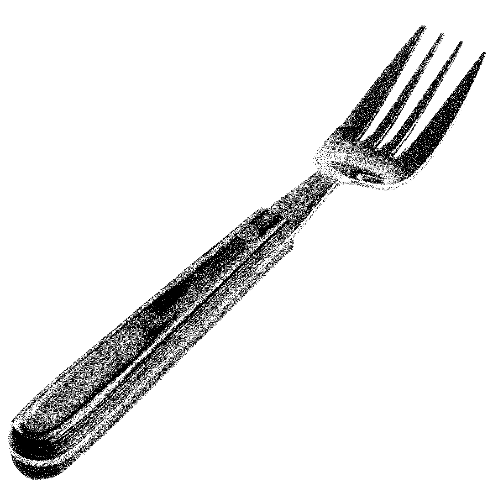

氣內食
기내식
: 기분 안의 식사
쓴맛
苦
Bitter

몸에 좋은 약은 입에 쓰다는 말이 있지요?
대부분의 고객님들이 이 메뉴를 맛본 이후
일종의 성장을 겪었다고 말씀해 주시더군요.
애써 삼켜도 불쾌하게 남는 끝맛이 가시질 않습니다.
생각하지 않으려 해도 계속 뇌리에 남아 마음이 무겁고
스트레스를 유발하는 고민거리, 다들 하나씩은 가지고 계시지요.
그런 것들이 조금씩은 더 신경이 쓰이고 불편해지는 메뉴입니다.
← 이전
다음 →